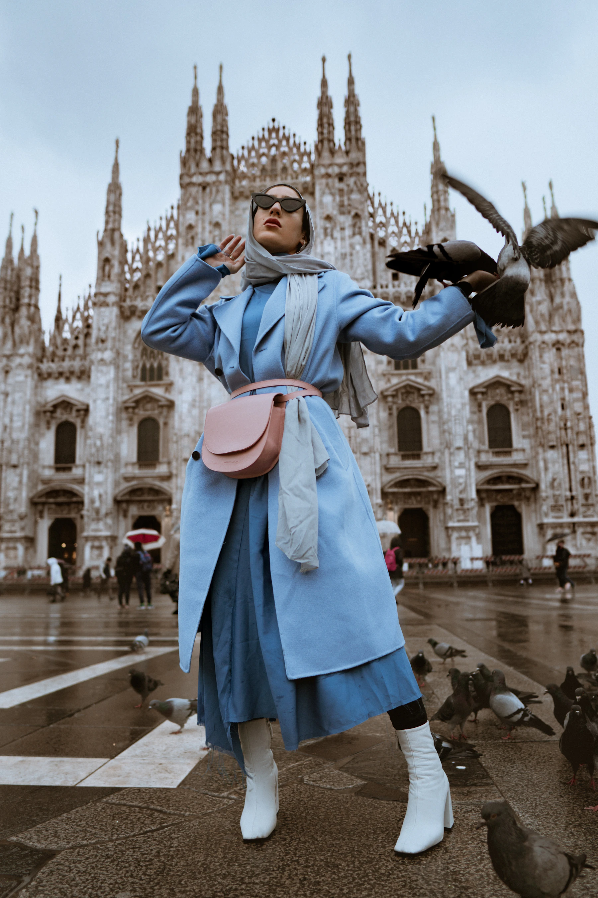

Wearable Art
Concept
Each release starts from an original digital canvas. Layers of color, noise, and gradients are mapped to texture, cut, and silhouette, preserving visual intensity in physical form.
Brand
TCDA exists to merge abstract digital art with premium garment craft. We design wearable pieces that carry emotional color architecture into everyday movement.

Wearable Art
Each release starts from an original digital canvas. Layers of color, noise, and gradients are mapped to texture, cut, and silhouette, preserving visual intensity in physical form.
Creative Philosophy
We remove visual noise so the artwork can breathe. Neutral environments, disciplined typography, and cinematic spacing place focus where it belongs: on color and shape.
Storytelling
Original artwork is generated and curated for emotion, rhythm, and chromatic precision.
Color data is translated into print and fabric behavior while preserving tonal depth.
Final garments are shaped for cinematic presence, comfort, and lasting visual identity.